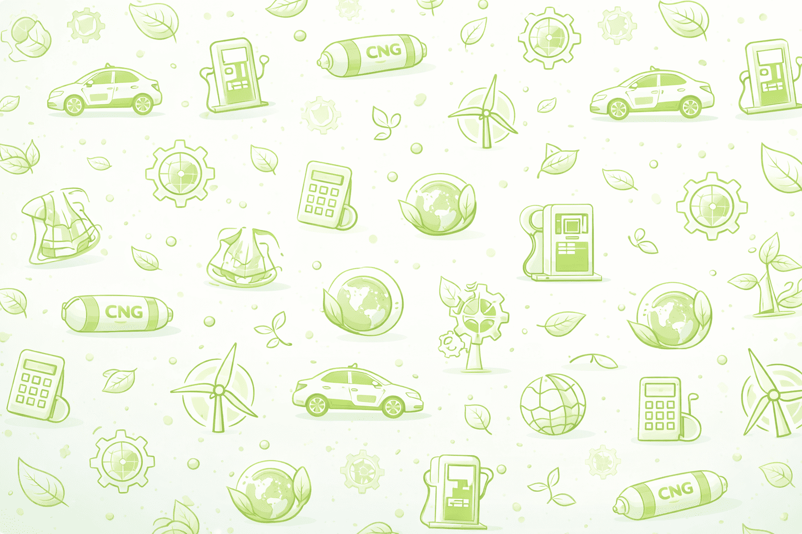

Cost Savings
CNG is significantly cheaper than petrol. Users can save up to 50% on monthly fuel expenses.
Eco-Friendly
CNG produces fewer emissions, helping reduce air pollution in major cities like Lagos and Abuja.
Easy Conversion
Vehicles can be converted easily using certified CNG kits with minimal engine modification.
Energy Security
Nigeria has abundant natural gas, reducing dependence on imported fuel.
Real-Life Impact
A taxi driver switching to CNG in Abuja can save over ₦50,000 monthly, significantly increasing profit margins.